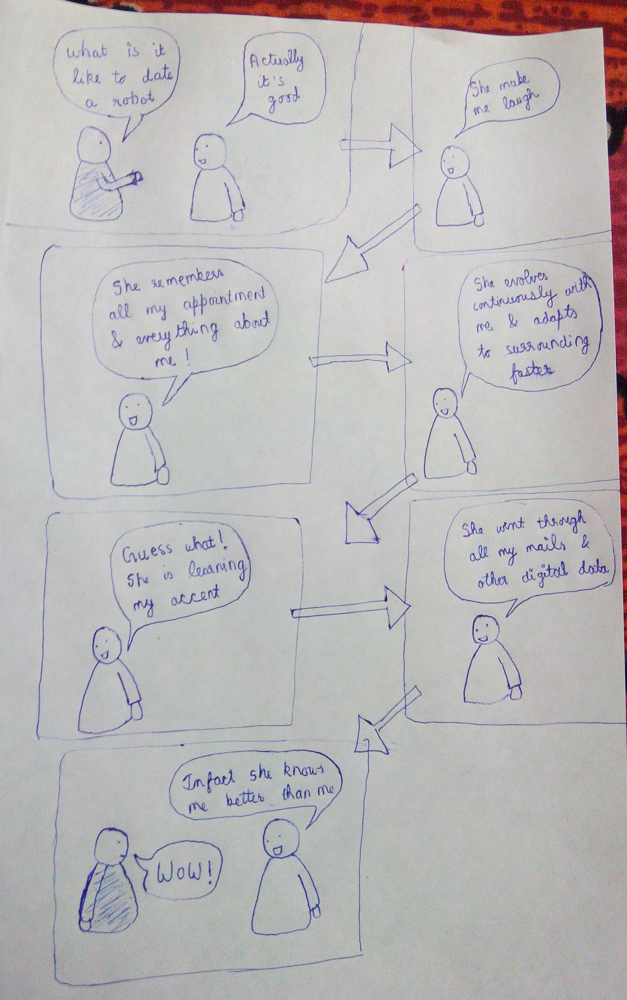

| Actions | Deterministic vs Stochastic | Episodic vs Sequential | Dynamic vs Static | Continuous vs Discrete | Fully observable vs Partially Observable | Single agent vs Multi agent |
|---|---|---|---|---|---|---|
| Playing soccer | Stochastic | Sequential | Dynamic | Continuous | Partially | Multi |
| Brushing your teeth | Deterministic | Sequential | Static | Continuous | Fully | Single |
| Playing a tennis match | Stochastic | Sequential | Dynamic | Continuous | Partially | Multi |
| Practicing tennis against a wall | Deterministic | Episodic | Static | Continuous | Fully | Single |
| Deciding what item to take at hostel lunch | Deterministic | Episodic | Static | Discrete | Fully | Single |
Explanation for Playing soccer 1. Stochastic - It is stochastic because next state cannot be completely determined by the current state and the action selected by agents. We do not know what about team's player are thinking. 2. Sequential - It is sequential because subsequent episodes depends on the previous episodes i.e where the ball was, positioning of other players. 3. Dynamic - It is dynamic because the environment continuosly changes while player is making his move. 4. Continuous - The decision space of player is continuous. He position the ball in a continuous space and his moves are from a continuos space. The moves aren't finite and discrete. 5. Partially observable - It is partially observable because while playing the agent only knows about himself or partially about his teammates(beacuse of strategy on which they are playing). He doesn't know what moves the opposition members will make. 6. Multi-agent - Many playing ae working to determine a state.
The comic is sometimes about 2100 AD
